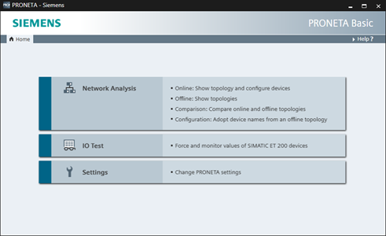
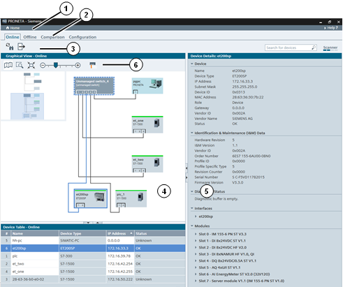
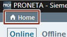
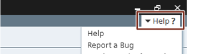

|
NOTE |
Within the scope of this documentation, the term “device” is used as a synonym for “network participant”, “node”, or “component.” Any piece of equipment which takes part in the PROFINET communication with a designated IP address is considered a “device”. |
PRONETA Basic is designed to allow you to accomplish one of several “tasks”. These tasks are currently:
Adjusting the software Settings
The tasks can be chosen from the Home screen, and returning to the Home screen anytime during the operation of PRONETA Basic will allow you to select a different task.

Screen Layout
In general, the PRONETA Basic window is split in several sections:
A header bar (1) on the top
A mode bar (2) which allows changing between the “modes”, or individual steps of the task chosen
A function bar (3) which offers particular functions for the current mode
One or more windows with Graphical Views of a network configuration (4) or tables of relevant information (5) below, like a Device Table
Finally, the Graphical Views contain a tool bar (6), designed to perform particular operations depending on the chosen mode

Depending on the task and mode chosen, the function bars and the context menus of the Graphical Views and the Device Tables offer differing functionality. Details can be found in the respective sections of PRONETA Basic User Guide.
The relative size of the views can be changed by dragging the border between the panes in the corresponding direction. Panes can be displayed or removed by using the arrow symbols “►”, “◄”, “▲” or “▼” symbols on their pane border.
The header bar, which is always visible while PRONETA Basic is running, contains two control elements:
The “Home” button on the left end of the header bar. Clicking on this will always return PRONETA Basic to the start screen.

The “Help?” button on the right end of the header bar. Clicking on it opens a menu with three commands:
“Help” opens or closes a frame on the right hand side of the window which brings up context-specific help. (Pressing the “F1” function key at any time offers the same functionality.) For more details, see Help View.
“Report a Bug” collects information about the current state of PRONETA Basic and prompts you to submit an error report to SIEMENS to improve PRONETA Basic performance in the future.
“Version and Information” opens a small window with information about the PRONETA Basic version you are running. Here, you can also manually check for new updates of PRONETA Basic.

Should you encounter a bug in PRONETA Basic, please use the bug reporting mechanism available through the “Help?” button on the right end of the header bar.
PRONETA Basic will create a diagnostic dump of its current state and prepare an e-mail to be sent to the PRONETA Basic support team with that dump attached. (Creating the dump will take a few moments.)
You will support the constant improvement of PRONETA Basic, if you add further information to this message before sending it, like the exact problems and circumstances of the error, and contact details for possible questions.